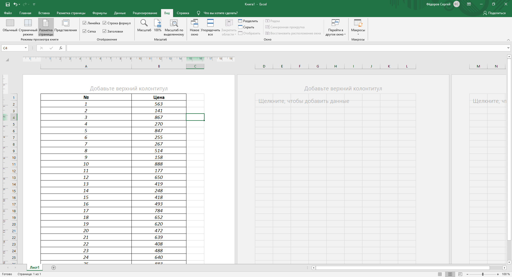
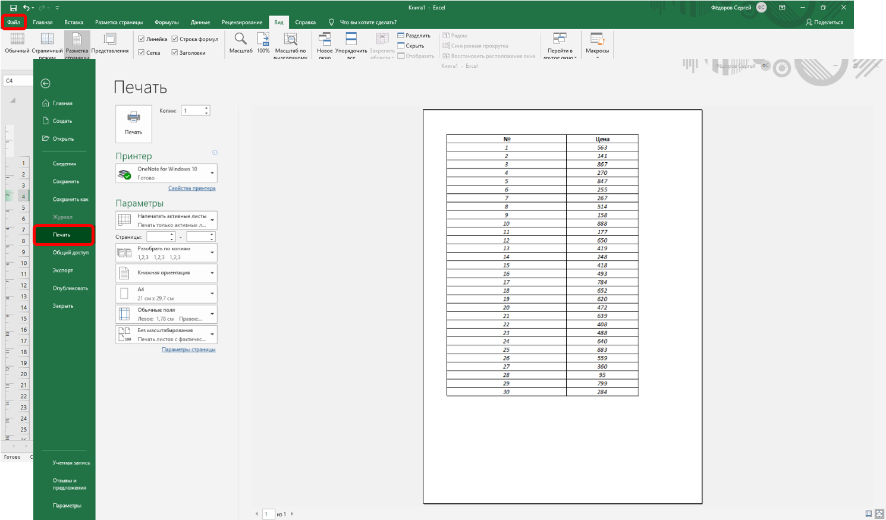
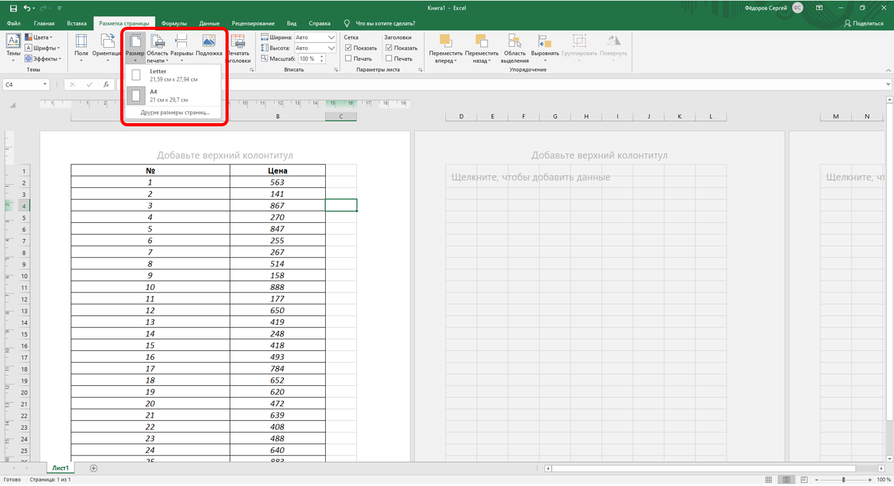
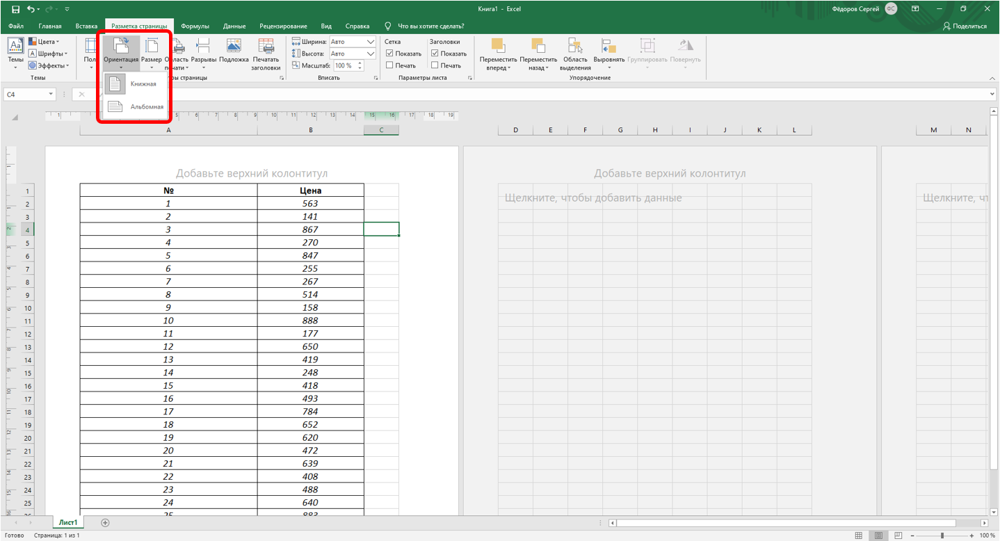
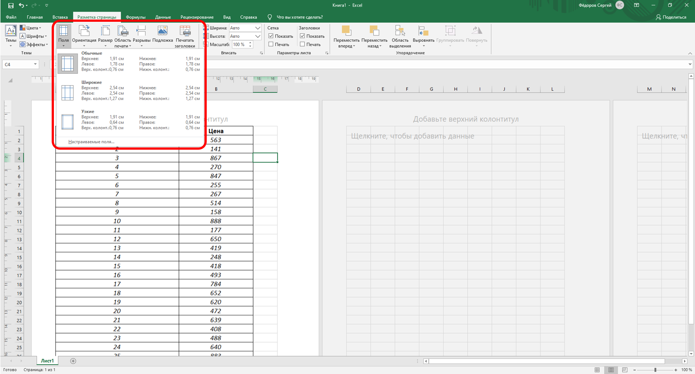
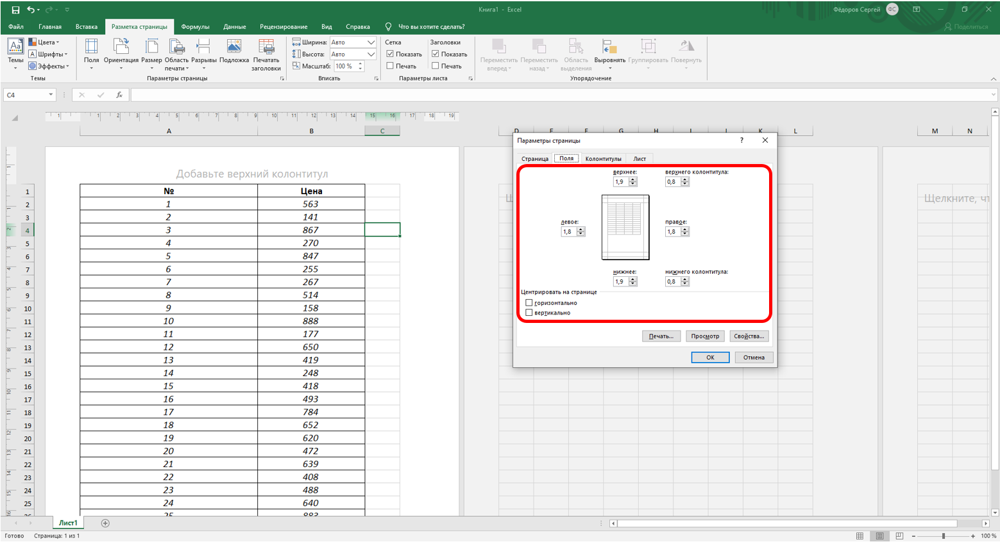

О печати таблиц
О печати таблиц
В Microsoft Excel можно печатать все данные листа или только определенный диапазон ячеек. При печати больших таблиц на нескольких страницах можно переносить названия строк и столбцов таблицы на каждую страницу. При необходимости можно вставлять принудительные разрывы страниц при печати больших таблиц. Отдельно от листа можно напечатать расположенную на нем диаграмму. Можно управлять режимом печати примечаний к ячейкам листа.
Можно напечатать сразу несколько листов одной книги или нескольких книг.
Можно изменять масштаб печати, увеличивая или уменьшая размер таблицы; можно подобрать масштаб под размер печатаемой таблицы.
При печати можно выбирать размер бумаги, ориентацию страниц, размер полей.
Страницы печати могут иметь колонтитулы, в которых можно размещать различную информацию, включая дату и время печати.
Таблицу, как правило, следует подготовить к печати.
Режим просмотра Разметка страницы обеспечивает отображение документа практически так, как он будет напечатан. В этом режиме можно настроить параметры страниц, создать и оформить колонтитулы, установить особенности печати документа. Однако в некоторых случаях может потребоваться предварительный просмотр документа перед печатью.
Кроме того, может потребоваться печать не всего документа, а его отдельных фрагментов, печать документа в нескольких экземплярах и т.д. В этом случае необходимо настроить параметры печати.
Основная подготовка документа к печати производится в режиме просмотра Разметка страницы во вкладке Разметка страницы (рис. 15.1).

Рис. 15.1. Просмотр документа в режиме Разметка страницы
Для печати и предварительного просмотра документа используется команда Печать меню кнопки Файл и команды подчиненного меню (рис. 15.2).

Рис. 15.2. Печать и настройка печати документов Excel
Подготовка документа к печати
Установка параметров страницы
Для выбора и установки параметров страницы используют элементы группы Параметры страницы вкладки Разметка страницы (см. рис. 15.1).
Для выбора размера бумаги в группе Параметры страницы щелкните по кнопке Размер и в появившемся списке выберите один из предлагаемых размеров (рис. 15.3).

Рис. 15.3. Выбор размера страницы
Для выбора ориентации страницы в группе Параметры страницы щелкните по кнопке Ориентация и в появившемся меню выберите один из предлагаемых вариантов (рис. 15.4).

Рис. 15.4. Выбор ориентации страницы
Для установки полей страницы в группе Параметры страницы щелкните по кнопке Поля и в появившемся меню выберите один из предлагаемых вариантов (рис. 15.5).

Рис. 15.5. Выбор размера полей страницы
Для выбора произвольного размера полей выберите команду Настраиваемые поля (см. рис. 15.5). В счетчиках Верхнее, Нижнее, Левое, Правое вкладки Поля окна Параметры страницы (рис. 15.6) установите требуемые размеры полей.

Рис. 15.6. Установка размера полей страницы
На установку слишком малых полей, не поддерживаемых возможностями принтера, Excel не реагирует.
Размер полей можно также изменить при предварительном просмотре документа перед печатью.
На листе, отображаемом в режиме Разметка страницы, размеры полей можно увидеть на горизонтальной и вертикальной линейках. Поля на линейках выделены белым цветом, в отличие от основной части страницы, линейка для которой выделена тёмным цветом.
Следует отметить, что действия по установке параметров страницы не могут быть отменены.